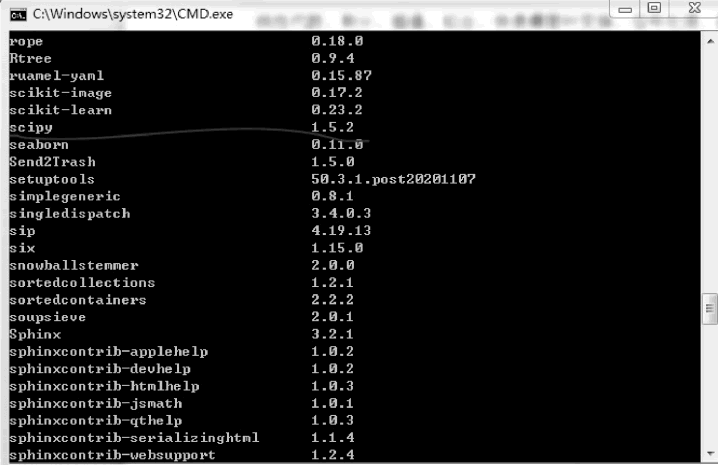

首页 > 编程笔记
Scipy库的安装和使用
Scipy 库是一个开源的算法库和工具集，它依赖于 NumPy 库，包含最优化、线性代数、积分、插值、拟合、快速傅里叶变换、信号处理、图像处理、常微分方程求解等功能，通常应用于数学、工程学等领域。
图 1 查看系统是否安装了 Scipy 库
结果显示系统已经安装了 Scipy 库，如下图所示。
如果系统没有安装 Scipy 库，可在命令行输入如 3 图所示的命令进行安装。
图 3 Scipy库安装命令
安装完毕，打开 Python，输入下图中的命令，如果有输出值，则表示 Scipy 库安装成功。
图 4 查看系统是否成功安装Scipy库
如果安装了 Anaconda 软件，也可以在 Anaconda 软件中安装 Scipy 库，具体操作步骤如下。
1) 打开 Anaconda 软件，弹出如下图所示的界面。
图 5 Anaconda软件界面
2) 在 Anaconda 软件界面中单击“Environments”标签，选择 Python 解释器所处的环境，右侧将显示该环境下所有已安装的库，如下图所示。
图 6 base（root）环境下已安装的库
3) 如果在已安装的库中找不到 Scipy 库，可以通过搜索框搜索 Scipy 库，完成安装。
Scipy 库中的 optimize 模块提供了常用的最优化算法函数实现，如求解线性方程 y=x+sinx 的根，函数图形如下图所示。
图 7 函数图形
下面是求解线性方程根的示例代码。
图 8 程序运行结果
下面使用 Scipy 库的 optimize 模块中的 minimize 函数，求解 y=x²+x+2 的最小值，示例代码如下。
图 9 运行结果
Scipy库的安装
首先要检查系统是否已安装 Scipy 库。在 Windows 系统任务栏搜索框中输入“CMD”，弹出命令行窗口，如下图所示，在光标处输入“pip list”，查看系统是否安装了 Scipy 库。图 1 查看系统是否安装了 Scipy 库
结果显示系统已经安装了 Scipy 库，如下图所示。

图 2 系统已经安装了Scipy库
图 2 系统已经安装了Scipy库
如果系统没有安装 Scipy 库，可在命令行输入如 3 图所示的命令进行安装。
图 3 Scipy库安装命令
安装完毕，打开 Python，输入下图中的命令，如果有输出值，则表示 Scipy 库安装成功。
图 4 查看系统是否成功安装Scipy库
如果安装了 Anaconda 软件，也可以在 Anaconda 软件中安装 Scipy 库，具体操作步骤如下。
1) 打开 Anaconda 软件，弹出如下图所示的界面。
图 5 Anaconda软件界面
2) 在 Anaconda 软件界面中单击“Environments”标签，选择 Python 解释器所处的环境，右侧将显示该环境下所有已安装的库，如下图所示。
图 6 base（root）环境下已安装的库
3) 如果在已安装的库中找不到 Scipy 库，可以通过搜索框搜索 Scipy 库，完成安装。
Scipy库的使用
安装了 Scipy 库后，编程时就可以调用 Scipy 库了，下面简单介绍 Scipy 库的使用方法。Scipy 库中的 optimize 模块提供了常用的最优化算法函数实现，如求解线性方程 y=x+sinx 的根，函数图形如下图所示。
图 7 函数图形
下面是求解线性方程根的示例代码。
import numpy as np
import scipy.optimize as opt
import matplotlib.pyplot as plt
# 定义函数 f(x)
def f(x):
return np.sin(x) + x
# 生成 x 值的数组
x = np.linspace(-10, 10, 1000)
# 计算对应的 y 值
y = f(x)
# 使用 bisect 函数寻找函数的根
a = opt.bisect(f, -10, 10)
print("线性方程 y=sin(x)+x 的根为:", a)
# 绘制函数图形
plt.axhline(0, color='k') # 绘制平行于 x 轴的直线 (x 轴)
plt.xlim(-10, 10) # 设置 x 轴的显示范围为 [-10, 10]
plt.scatter(a, f(a), c='r', s=150) # 在图上标出根 a，即红色的点
plt.show() # 显示图形
上述程序运行结果如下图所示：图 8 程序运行结果
下面使用 Scipy 库的 optimize 模块中的 minimize 函数，求解 y=x²+x+2 的最小值，示例代码如下。
import numpy as np
from scipy.optimize import minimize
import matplotlib.pyplot as plt
# 定义函数 f(x)
def f(x):
return x**2 + x + 2
# 使用 minimize 函数求解函数的最小值
a = minimize(f, 0, method='BFGS')
# 生成 x 值的数组
x = np.linspace(-10, 10, 1000)
# 计算对应的 y 值
y = f(x)
# 绘制函数图形，并在图上标注最小值
plt.plot(x, y)
plt.scatter(a.x, f(a.x), c='r', s=150)
plt.show()
print("函数的最小值为:", a.x) # 打印函数的最小值
上述程序运行结果如下图所示：图 9 运行结果
关注公众号「站长严长生」，在手机上阅读所有教程，随时随地都能学习。内含一款搜索神器，免费下载全网书籍和视频。

微信扫码关注公众号